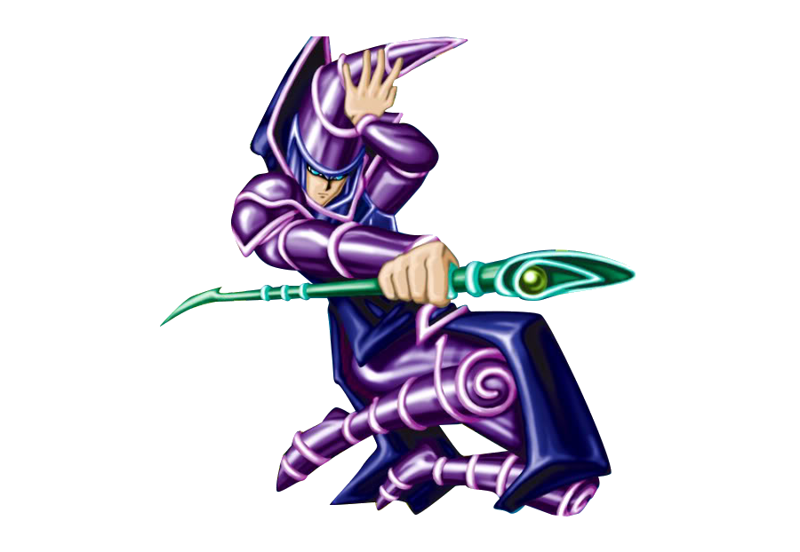
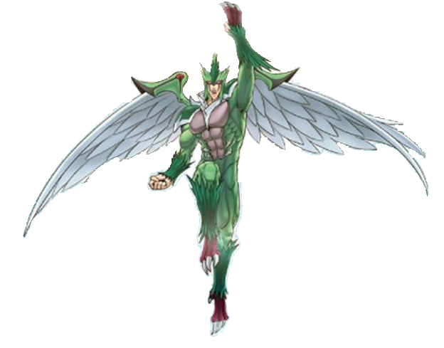
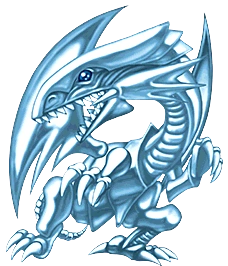

Home
Favoritos
Contacto
Modo Oscuro

¡Tus cartas favoritas!
En este apartado se almacenan tus cartas favoritas.
Para agregarlas debes tocar en el icono
de cada carta.

 Aqui aparecerán tus cartas favoritas: